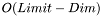

Class List
Here are the classes, structs, unions and interfaces with brief descriptions:
| Indices<> | Meta-template struct to add syntactic sugar for creating tuples of pairs |
| TraitsGenerator< T > | A small generator struct to make writing the traits class easier |
| SetA< BoxType, TIndices > | A class to find intersections between cartesian products of arbitrarily-typed intervals |
| HybridScanner< PointsContainQueries, Dim > | Find intersections between boxes by recursing through virtual segment trees |
| HybridScanner< PointsContainQueries, SetA< BoxType, TIndices...>::LASTDIM > | |
| IntersectionTester< Dim, Limit > | Check in  if two intervals intersect by comparing in all dimensions till it's either false or all tests evaluated to true |
| KeyCreator< KeyCreatorIndices > | Handle the creation of keys by using given functors. As we have to handle indices which aren't known at the time of the tree instantiation, we have to add another template class to use different size_t parameter packs |
| KeyPrinter< I, N > | For Debug reasons, print all dimensions of a given key via cout |
| KeyPrinter< N, N > | |
| lessHead< Dim > | This Functor compares the lower endpoints of two key_type objects in a given dimension |
| lessTail< Dim > | This Functor compares the upper endpoints of two key_type objects in a given dimension |
| OneWayScanner< PointsContainQueries, Dim > | A scanner to find one type of intersection between two sets of intervals by looking at one of them as a set of points |
| SetB< QBoxType, QIndices > | Subclass, when the type of the query objects differs from the type of the data objects, we need an additional layer of template specialization |
| State | Holding various information like the random generator state, some specific addresses of data and dimensional limits |
| Traits< T > | A template for defining Traits of a specific Box class, has to define its types / limits |
| PackImpl | |
 1.6.1
1.6.1